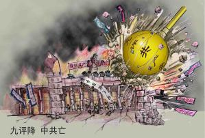

7/4/05 Li Heping — Từ DAJIYUAN.COM
Số người tuyên bố thoái xuất khỏi đảng cộng sản đăng trên website thoái đảng của Thời báo Đại Kỷ Nguyên (tuidang.dajiyuan.com) đã vượt qúa 700.000 tính từ ngày 6 tháng tư, 2005. Trung bình số thoái đảng bỏ đoàn mỗi ngày khoảng 15 đến 20 ngàn người. Do sự tăng cường chặt chẽ việc bế tỏa mạng Internet ở Trung Quốc, số tuyên bố trên internet bị hạn chế. Dầu vậy mặc lòng, con số chứng tỏ sự loan truyền nhanh chóng về tin tức thoái đảng và đằng sau đó là sự loan rộng cuốn sách Cửu Bình (Chín bài bình luận về đảng cộng sản) của Thời báo Đại Kỷ Nguyên.

Cửu Bình giáng xuống, ĐCSTQ tiêu vong
ĐCSTQ (Đảng cộng sản Trung Quốc) đã cải thiện kỷ thuật bế tỏa sự theo dõi tin trên internet. Theo website MINGHUI.ORG đưa tin (một mạng tin của Pháp Luân Công) một viên cảnh sát chuyên thám thính tin tức họat động trên internet, tiết lộ nguồn tin về buổi họp mới đây giữa Công an tỉnh và giới chức cảnh sát internet. Buổi họp đề cập gồm ba điểm trong đó có vấn đề truy tầm tất cả địa chỉ e-mail. Tất cả địa chỉ e-mail trên thư tín từ hải ngoại phải được theo dò. Chính quyền gắn nhiều loại chương trình phần mềm để thâu hết tất cả thư điện tử ngay khi gữi đi. Chính quyền Trung Quốc mới đây cũng có biện pháp hạn chế vô cùng thắt chặt đối với người xử dụng internet, Internet Cà-phê, và tất cả mạng tin điện toán. Ví dụ, Internet Cà-phê phải bắt buộc lấy tin liệu và dấu tay của người xử dụng internet trước khi cho phép họ xử dụng.
Thật là mỉa mai thay, nhiều cảnh sát viên đã đọc Cửu Bình và đã hiểu sự thật về sự đàn áp Pháp Luân Công của đảng, đã nói rằng họ làm phận sự chỉ vỉ để bảo vệ gia đình. Một viên sĩ quan cảnh sát nói: “Nếu mọi người Trung Hoa có một DVD Cửu Bình, chúng tôi đã không phải làm việc trái với lương tâm này. Đảng ĐCSTQ đã chẳng cai trị được Trung Quốc”.
Một viên cảnh sát nói: “Sau khi đọc Cửu Bình, tôi nhận thức được rằng tôi đã làm điều phi luân lý. Bây giờ tôi làm việc chống lại ĐCSTQ trong giờ nhàn rỗi. Tôi chuyền tay Cửu Bình cho nhiều người, không kể họ quen biết với tôi hay không.”
Một vấn đề khác trong hai điều yêu cầu của buổi họp cảnh sát khẩn cấp, theo anh cảnh sát này nói, đó là: “Tăng Khánh Hồng ra lệnh điều tra tỷ mỹ các nhân vật trong các hội văn hóa, văn chương và nghệ thuật có giao dịch thư tín hải ngoại đễ tìm ra nhóm văn sĩ —từ trung ương chính quyền cho đến cấp tỉnh, thị xã, quận— để viết bài chỉ trích bôi nhọ Pháp Luân Công, và xúi dục oán ghét chống lại Pháp Luân Công. Theo một chuyên gia phân tách, ĐCSTQ tấn công Pháp Luân Công để đánh lạc hướng sự chú ý của quần chúng và để làm cho nhẹ bớt áp lực hùng mạnh của Cửu Bình, cũng như làn sóng thoái đảng.
Mới đây các huy hiệu Đảng và Đoàn mà người ta không trông thấy trong 1 thập niên, nay thấy xuất hiển lại nhiều nơi tại Trung Quốc. Đảng viên đi làm phải bắt buộc mang huy hiệu. Đấy là một cố gắng của ĐCSTQ trong cuộc vận động “bảo tiến” (bảo tồn đảng và duy trì tiến bộ đảng). Nhà phóng viên đã phỏng vấn nhiều nhân công và nhân viên tại phi trường Thẩm Quyến, và hỏi họ có thấy sự mỉa mai của lịch sử đi thụt lùi ngược lại, và phải chăng những phương pháp áp dụng thời Đại Cách Mạng Văn Hóa nay đang tái xuất. Những người trả lời đã nói họ phải mang huy hiệu vì có lệnh bắt mang. Trong mây ngày qua, Những trung tâm trách vụ thoái đảng đã nhận nhiều cú điện thọai quấy phá, và việc điều hành của trung tâm cũng bị quây nhiểu. Các trung tâm Hong Kong, Đài loan, Úc, Israel và bộ chỉ huy San Diego tại Hoa Kỳ đều có nhân điện thoại đe dọạ.
Ông Li tại trung tâm San Diego nói có nhận điện thoại lần đầu lúc 6:22 pm ngày 04 tháng tư. Đấy là giọng nói của 1 ngưới đàn bà TQ đọc lời thoại đàm bằng tiếng Anh. Nội dung là xuyên tạc và nói xấu nhà sáng lập Pháp Luân Công. Vào 7:22pm họ nhận môt cú điện nữa. Cũng giọng của cùng một ngưới đọc cùng một lời thọai nhưng bằng tiếng Hoa. Vào 11:30 trung tâm nhận cú điện thứ ba.
{kind=link}